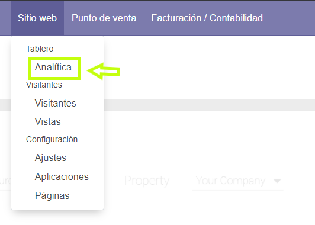
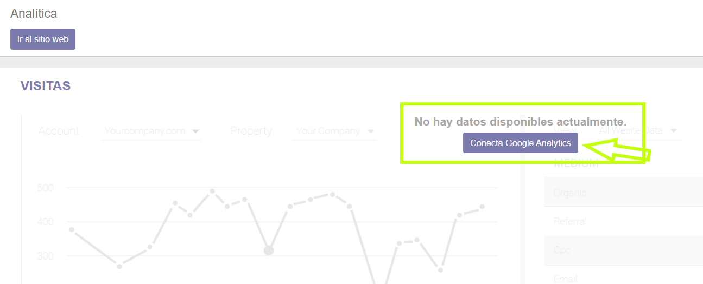
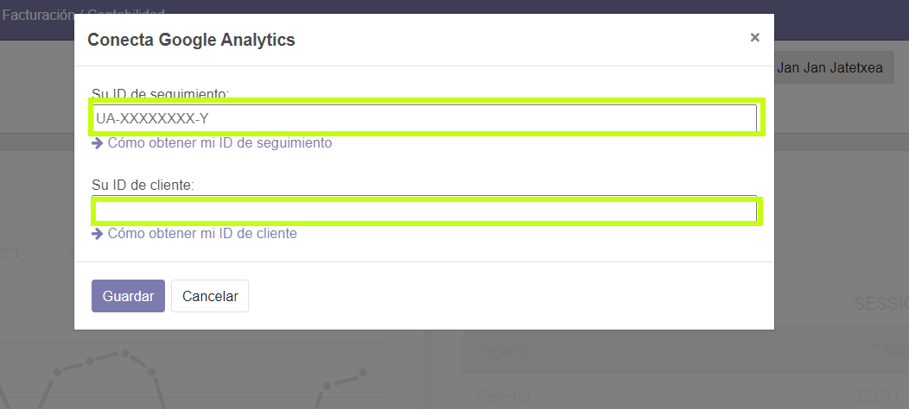
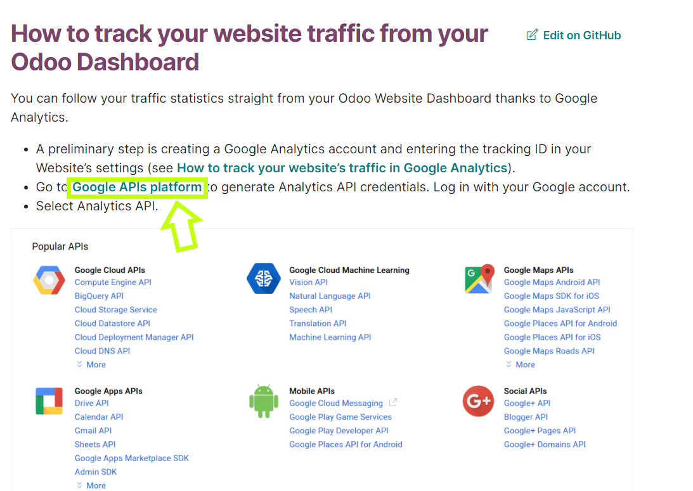

Cómo rastrear el tráfico del sitio web en Google Analytics
Lo primero será entrar en el apartado de analítica dentro de sitio web.

Después tenemos que clicar en el botón de conectar Google Analytics

Configuración de IDs
Tenemos que introducir la ID de seguimiento y la ID de cliente.

Obtener ID de seguimiento
Para conseguir la ID de seguimiento tenemos que crear una cuenta de Google Analytics y conseguiremos la ID.

Obtener API
Para conseguir la API tenemos que entrar a la página de Google API y le daremos a generar un código API.
